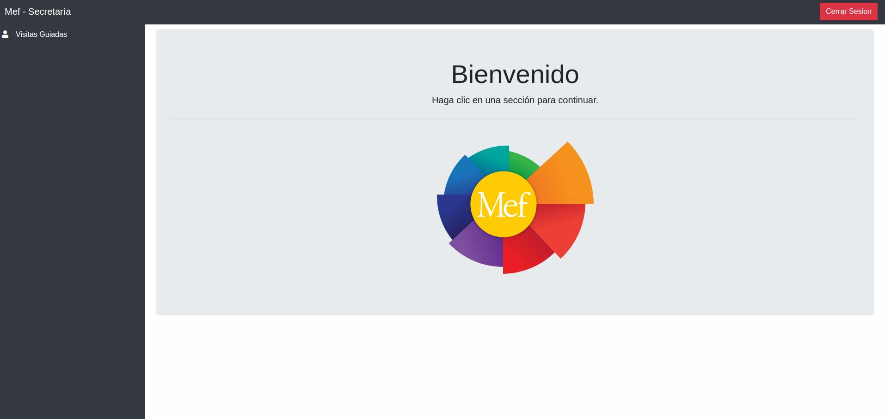

8. Jefe de Secretaria (Parcialmente terminado, faltan algunas imágenes)¶
Bienvenido a la Gestión de Secretaría. En esta sección usted podrá ver y editar las Visitas Guiadas del Mueso.
Pantalla Principal / Listado
Bienvenido al listado de Visitas Guiadas. El presente listado le presentará un detalle de todas las Visitas Guiadas del Museo.
{kind=link}
Puede seleccionar el símbolo ‘lápiz’ para poder editar su información general.
Puede seleccionar el símbolo ‘basura’ para poder eliminar un elemento.
Si desea agregar un elemento nuevo, haga click en el símbolo ‘+’.
Si desea exportar un el presente listado puede hacerlo seleccionando entre ‘Excel’, ‘PDF’, o ‘CSV’
8.1. Agregar Visita Guiada¶
Esta es la sección dedicada al alta de las visitas guiadas.
Consiste en asignarle:
La Exhibición a la que corresponda (debe estar precargada en el listado de exhibiciones).
El Cliente que desea la visita (debe estar precargado en el listado de clientes).
El empleado que del museo que será de guía (debe estar precargado en el listado de guías).
La cantidad de personas que irán a la vistia guiada, incluyendo al cliente que solicita la visita (puede haber un máximo de 300).
La fecha en que se hará la vistia (que por lógica deberá ser mayor o igual a la fecha actual)
El horario de la visita, que estará cargado en una lista de horarios disponibles para esa fecha.
El precio de la visita, que estará en Pesos Argentinos, con un máximo de $3.000.000.
8.2. Editar Visita Guiada (NECESITO EL SOFTWARE FUNCIONANDO BIEN PARA ESTA IMAGEN DE “EDITAR VISITA”)¶
Esta es la sección dedicada a la edición de las visitas guiadas.
Consiste en asignarle:
La Exhibición a la que corresponda (debe estar precargada en el listado de exhibiciones).
El Cliente que desea la visita (debe estar precargado en el listado de clientes).
El empleado que del museo que será de guía (debe estar precargado en el listado de guías).
La cantidad de personas que irán a la vistia guiada, incluyendo al cliente que solicita la visita (puede haber un máximo de 300).
La fecha en que se hará la vistia (que por lógica deberá ser mayor o igual a la fecha actual)
El horario de la visita, que estará cargado en una lista de horarios disponibles para esa fecha.
El precio de la visita, que estará en Pesos Argentinos, con un máximo de $3.000.000.
8.3. Eliminar Visita Guiada (NECESITO EL SOFTWARE FUNCIONANDO BIEN PARA ESTA IMAGEN DE “ELIMINAR VISITA”)¶
Esta es la sección dedicada a eliminar visitas guiadas.
Seleccione la visita guiada que desee eliminar y aparecerá una mensaje de confirmación. Si acepta, se eliminará la visita, si cancela, no se eliminará y volverá al listado de visitas.